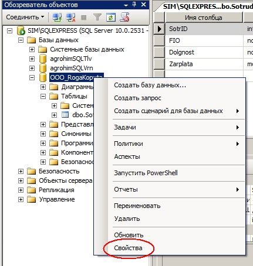
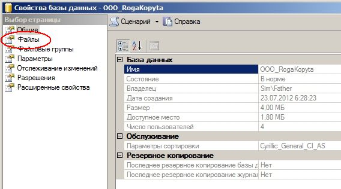
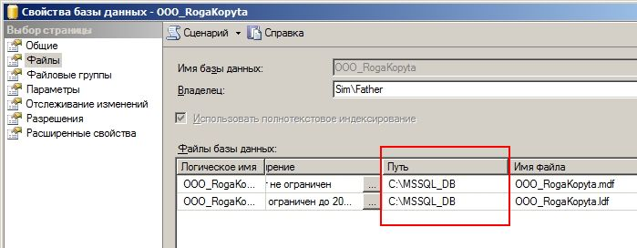

Как узнать локализацию (местонахождение) базы данных MS SQL Server?
Иногда бывает нужно определить путь к базе данных в MS SQL Server Express. Сделать это совсем несложно.
Просто в Server Management Studio становимся на нужную БД , в контекстном меню выбираем Свойства:

... и жмём на пункт Файлы формы Свойств базы данных:

Нужную нам информацию о локализации БД узнаём из информации в столбце Путь:
